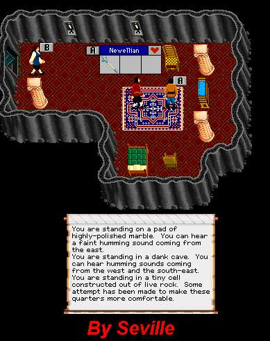

| Strength Halberd Trader |
 |
| Back to KM -5. |
| After reaching this tiny cell, hold Minotaur Blood in one hand and the 6 oz Bloodroot in the other. Click the heads to trade. Slamming out of here is possible. To get Minotaur Blood and 6 oz Bloood root, find them in the KM dungeons or advertise in the Marketplace Forums. If buying, be prepared to pay a high price for them unless you know someone big. |